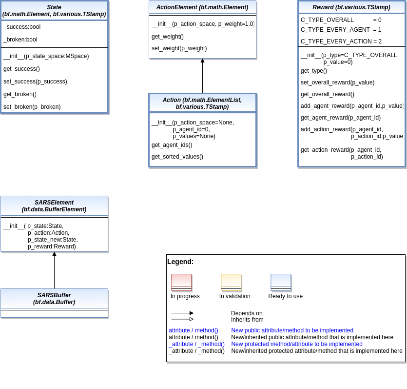

Reinforcement Learning
States, Actions, Rewards
Ver. 1.1.3 (2022-02-28)
This module provides model classes for state, action and reward data and their buffering.
- class mlpro.rl.models_sar.State(p_state_space: mlpro.bf.math.MSpace, p_initial: bool = False, p_terminal: bool = False, p_success: bool = False, p_broken: bool = False, p_timeout: bool = False)
Bases:
mlpro.bf.math.Element,mlpro.bf.various.TStampState of an environment as an element of a given state space. Additionally, the state can be labeled with various properties.
- Parameters
p_state_space (MSpace) – State space of the related environment.
p_initial (bool) – This optional flag signals that the state is the first one after a reset. Default=False.
p_terminal (bool) – This optional flag labels the state as a terminal state. Default=False.
p_success (bool) – This optional flag labels the state as an objective state. Default=False.
p_broken (bool) – This optional flag labels the state as a final error state. Default=False.
p_timeout (bool) – This optional flag signals that the cycle limit of an episode has been reached. Default=False.
- get_initial() bool
- set_initial(p_initial: bool)
- get_success() bool
- set_success(p_success: bool)
- get_broken() bool
- set_broken(p_broken: bool)
- get_timeout() bool
- set_timeout(p_timeout: bool)
- get_terminal() bool
- set_terminal(p_terminal: bool)
- class mlpro.rl.models_sar.ActionElement(p_action_space: mlpro.bf.math.Set, p_weight=1.0)
Bases:
mlpro.bf.math.Element- get_weight()
- set_weight(p_weight)
- class mlpro.rl.models_sar.Action(p_agent_id=0, p_action_space=None, p_values: Optional[numpy.ndarray] = None)
Bases:
mlpro.bf.math.ElementList,mlpro.bf.various.TStampObjects of this class represent actions of (multi-)agents. Every element of the internal list is related to an agent, and its partial subsection. Action values for the first agent can be added while object instantiation. Action values of further agents can be added by using method self.add_elem().
- get_agent_ids()
- get_sorted_values() numpy.ndarray
- class mlpro.rl.models_sar.Reward(p_type=0, p_value=0)
Bases:
mlpro.bf.various.TStampObjects of this class represent rewards of environments. The internal structure depends on the reward type. Three types are supported as listed below.
- C_TYPE_OVERALL = 0
- C_TYPE_EVERY_AGENT = 1
- C_TYPE_EVERY_ACTION = 2
- C_VALID_TYPES = [0, 1, 2]
- get_type()
- is_rewarded(p_agent_id) bool
- set_overall_reward(p_reward) bool
- get_overall_reward()
- add_agent_reward(p_agent_id, p_reward) bool
- get_agent_reward(p_agent_id)
- add_action_reward(p_agent_id, p_action_id, p_reward) bool
- get_action_reward(p_agent_id, p_action_id)
- class mlpro.rl.models_sar.SARSElement(p_state: mlpro.rl.models_sar.State, p_action: mlpro.rl.models_sar.Action, p_reward: mlpro.rl.models_sar.Reward, p_state_new: mlpro.rl.models_sar.State)
Bases:
mlpro.bf.data.BufferElementElement of a SARSBuffer.
- class mlpro.rl.models_sar.SARSBuffer(p_size=1)
Bases:
mlpro.bf.data.BufferState-Action-Reward-State-Buffer in dictionary.
Environments

Ver. 1.4.3 (2022-08-15)
This module provides model classes for environments and environment models.
- class mlpro.rl.models_env.AFctBase(p_afct_cls, p_state_space: mlpro.bf.math.MSpace, p_action_space: mlpro.bf.math.MSpace, p_input_space_cls=<class 'mlpro.bf.math.ESpace'>, p_output_space_cls=<class 'mlpro.bf.math.ESpace'>, p_output_elem_cls=<class 'mlpro.bf.math.Element'>, p_threshold=0, p_buffer_size=0, p_ada=True, p_logging=True, **p_par)
Bases:
mlpro.bf.ml.ModelBase class for all special adaptive functions (state transition, reward, success, broken).
- Parameters
p_afct_cls – Adaptive function class (compatible to class AdaptiveFunction)
p_state_space (MSpace) – State space of an environment or observation space of an agent
p_action_space (MSpace) – Action space of an environment or agent
p_input_space_cls – Space class that is used for the generated input space of the embedded adaptive function (compatible to class MSpace)
p_output_space_cls – Space class that is used for the generated output space of the embedded adaptive function (compatible to class MSpace)
p_output_elem_cls – Output element class (compatible to/inherited from class Element)
p_threshold (float) – Threshold for the difference between a set point and a computed output. Computed outputs with a difference less than this threshold will be assessed as ‘good’ outputs. Default = 0.
p_buffer_size (int) – Initial size of internal data buffer. Default = 0 (no buffering).
p_ada (bool) – Boolean switch for adaptivity. Default = True.
p_logging – Log level (see constants of class Log). Default: Log.C_LOG_ALL
p_par (Dict) – Further model specific parameters (to be specified in child class).
- _afct
Embedded adaptive function
- Type
- C_TYPE = 'AFct Base'
- get_afct() mlpro.sl.models.AdaptiveFunction
- get_state_space() mlpro.bf.math.MSpace
- get_action_space() mlpro.bf.math.MSpace
- get_hyperparam() mlpro.bf.ml.HyperParamTuple
Returns the internal hyperparameter tuple to get access to single values.
- switch_adaptivity(p_ada: bool)
Switches adaption functionality on/off.
- Parameters
p_ada (bool) – Boolean switch for adaptivity
- switch_logging(p_logging)
Sets new log level.
- Parameters
p_logging – Log level (constant C_LOG_LEVELS contains valid values)
- set_random_seed(p_seed=None)
Resets the internal random generator using the given seed.
- get_adapted() bool
Returns True, if the model was adapted at least once. False otherwise.
- clear_buffer()
Clears internal buffer (if buffering is active).
- get_accuracy()
Computes the accuracy of the model.
- Returns
Accuracy of the model as a scalar value in interval [0,1]
- Return type
float
- init_plot(p_figure=None)
- update_plot()
Updates the plot.
- class mlpro.rl.models_env.AFctSTrans(p_afct_cls, p_state_space: mlpro.bf.math.MSpace, p_action_space: mlpro.bf.math.MSpace, p_input_space_cls=<class 'mlpro.bf.math.ESpace'>, p_output_space_cls=<class 'mlpro.bf.math.ESpace'>, p_output_elem_cls=<class 'mlpro.rl.models_sar.State'>, p_threshold=0, p_buffer_size=0, p_ada=True, p_logging=True, **p_par)
Bases:
mlpro.rl.models_env.AFctBase- C_TYPE = 'AFct STrans'
- simulate_reaction(p_state: mlpro.rl.models_sar.State, p_action: mlpro.rl.models_sar.Action) mlpro.rl.models_sar.State
- class mlpro.rl.models_env.AFctReward(p_afct_cls, p_state_space: mlpro.bf.math.MSpace, p_action_space: mlpro.bf.math.MSpace, p_input_space_cls=<class 'mlpro.bf.math.ESpace'>, p_output_space_cls=<class 'mlpro.bf.math.ESpace'>, p_output_elem_cls=<class 'mlpro.bf.math.Element'>, p_threshold=0, p_buffer_size=0, p_ada=True, p_logging=True, **p_par)
Bases:
mlpro.rl.models_env.AFctBase- C_TYPE = 'AFct Reward'
- compute_reward(p_state: Optional[mlpro.rl.models_sar.State] = None, p_state_new: Optional[mlpro.rl.models_sar.State] = None) mlpro.rl.models_sar.Reward
- class mlpro.rl.models_env.AFctSuccess(p_afct_cls, p_state_space: mlpro.bf.math.MSpace, p_action_space: mlpro.bf.math.MSpace, p_input_space_cls=<class 'mlpro.bf.math.ESpace'>, p_output_space_cls=<class 'mlpro.bf.math.ESpace'>, p_output_elem_cls=<class 'mlpro.bf.math.Element'>, p_threshold=0, p_buffer_size=0, p_ada=True, p_logging=True, **p_par)
Bases:
mlpro.rl.models_env.AFctBase- C_TYPE = 'AFct Success'
- compute_success(p_state: mlpro.rl.models_sar.State) bool
- class mlpro.rl.models_env.AFctBroken(p_afct_cls, p_state_space: mlpro.bf.math.MSpace, p_action_space: mlpro.bf.math.MSpace, p_input_space_cls=<class 'mlpro.bf.math.ESpace'>, p_output_space_cls=<class 'mlpro.bf.math.ESpace'>, p_output_elem_cls=<class 'mlpro.bf.math.Element'>, p_threshold=0, p_buffer_size=0, p_ada=True, p_logging=True, **p_par)
Bases:
mlpro.rl.models_env.AFctBase- C_TYPE = 'AFct Broken'
- compute_broken(p_state: mlpro.rl.models_sar.State) bool
- class mlpro.rl.models_env.EnvBase(p_latency: Optional[datetime.timedelta] = None, p_afct_strans: Optional[mlpro.rl.models_env.AFctSTrans] = None, p_afct_reward: Optional[mlpro.rl.models_env.AFctReward] = None, p_afct_success: Optional[mlpro.rl.models_env.AFctSuccess] = None, p_afct_broken: Optional[mlpro.rl.models_env.AFctBroken] = None, p_logging=True)
Bases:
mlpro.rl.models_env.AFctSTrans,mlpro.rl.models_env.AFctReward,mlpro.rl.models_env.AFctSuccess,mlpro.rl.models_env.AFctBroken,mlpro.bf.plot.Plottable,mlpro.bf.various.ScientificObjectBase class for all environment classes. It defines the interface and elementary properties for an environment in the context of reinforcement learning.
- Parameters
p_latency (timedelta) – Optional latency of environment. If not provided, the internal value of constant C_LATENCY is used by default.
p_afct_strans (AFctSTrans) – Optional external adaptive function for state transition.
p_afct_reward (AFctReward) – Optional external adaptive function for reward computation.
p_afct_success (AFctSuccess) – Optional external adaptive function for state evaluation ‘success’.
p_afct_broken (AFctBroken) – Optional external adaptive function for state evaluation ‘broken’.
p_logging – Log level (see class Log for more details).
- _latency
Latency of the environment.
- Type
timedelta
- _afct_strans
Internal adaptive state transition function.
- Type
- _afct_reward
Internal adaptive reward function.
- Type
- _afct_success
Internal adaptive function for state evaluation ‘success’.
- Type
- _afct_broken
Internal adaptive function for state evaluation ‘broken’.
- Type
- C_TYPE = 'Environment Base'
- C_NAME = '????'
- C_LATENCY = datetime.timedelta(seconds=1)
- C_REWARD_TYPE = 0
- C_SCIREF_TYPE = None
- switch_adaptivity(p_ada: bool)
Adaptivity is switched off here.
- adapt(*p_args) bool
Adaptivity is switched off here. If called, then something went wrong.
- get_adapted() bool
Adaptivity is switched off here. If called, then something went wrong.
- get_accuracy()
Accuracy computation is switched off here. If called, the something went wrong.
- switch_logging(p_logging)
Sets new log level.
- Parameters
p_logging – Log level (constant C_LOG_LEVELS contains valid values)
- get_latency() datetime.timedelta
Returns latency of environment.
- set_latency(p_latency: Optional[datetime.timedelta] = None) None
Sets latency of environment. If p_latency is None latency will be reset to internal value of attribute C_LATENCY.
- Parameters
p_latency (timedelta) – New latency value
- get_reward_type()
- get_state() mlpro.rl.models_sar.State
Returns current state of environment.
- get_success() bool
- get_broken() bool
- get_last_reward() mlpro.rl.models_sar.Reward
- get_functions()
- get_cycle_limit() int
Returns limit of cycles per training episode. To be implemented in child classes.
- set_random_seed(p_seed=None)
Resets the internal random generator using the given seed.
- Parameters
p_seed (int) – Seed parameter for an internal random generator
- reset(p_seed=None) None
Resets environment to an initial state by calling the related custom method _reset().
- Parameters
p_seed (int) – Seed parameter for an internal random generator
- process_action(p_action: mlpro.rl.models_sar.Action) bool
Processes a state transition based on the current state and a given action. The state transition itself is implemented in child classes in the custom method _process_action().
- Parameters
p_action (Action) – Action to be processed
- Returns
success – True, if action processing was successfull. False otherwise.
- Return type
bool
- simulate_reaction(p_state: Optional[mlpro.rl.models_sar.State] = None, p_action: Optional[mlpro.rl.models_sar.Action] = None) mlpro.rl.models_sar.State
Simulates a state transition based on a state and an action. The simulation step itself is carried out either by an internal custom implementation in method _simulate_reaction() or by an embedded adaptive function.
- compute_reward(p_state_old: Optional[mlpro.rl.models_sar.State] = None, p_state_new: Optional[mlpro.rl.models_sar.State] = None) mlpro.rl.models_sar.Reward
Computes a reward for the state transition, given by two successive states. The reward computation itself is carried out either by a custom implementation in method _compute_reward() or by an embedded adaptive function.
- compute_success(p_state: mlpro.rl.models_sar.State) bool
Assesses the given state whether it is a ‘success’ state. Assessment is carried out either by a custom implementation in method _compute_success() or by an embedded adaptive function.
- Parameters
p_state (State) – State to be assessed.
- Returns
True, if the given state is a ‘success’ state. False otherwise.
- Return type
bool
- compute_broken(p_state: mlpro.rl.models_sar.State) bool
Assesses the given state whether it is a ‘broken’ state. Assessment is carried out either by a custom implementation in method _compute_broken() or by an embedded adaptive function.
- Parameters
p_state (State) – State to be assessed.
- Returns
True, if the given state is a ‘broken’ state. False otherwise.
- Return type
bool
- init_plot(p_figure=None)
- update_plot()
Updates the plot.
- clear_buffer()
Clears internal buffer (if buffering is active).
- class mlpro.rl.models_env.Environment(p_mode=0, p_latency: Optional[datetime.timedelta] = None, p_afct_strans: Optional[mlpro.rl.models_env.AFctSTrans] = None, p_afct_reward: Optional[mlpro.rl.models_env.AFctReward] = None, p_afct_success: Optional[mlpro.rl.models_env.AFctSuccess] = None, p_afct_broken: Optional[mlpro.rl.models_env.AFctBroken] = None, p_logging=True)
Bases:
mlpro.rl.models_env.EnvBase,mlpro.bf.ml.ModeThis class represents the central environment model to be reused/inherited in own rl projects.
- Parameters
p_mode – Mode of environment. Possible values are Mode.C_MODE_SIM(default) or Mode.C_MODE_REAL.
p_latency (timedelta) – Optional latency of environment. If not provided, the internal value of constant C_LATENCY is used by default.
p_afct_strans (AFctSTrans) – Optional external adaptive function for state transition
p_afct_reward (AFctReward) – Optional external adaptive function for reward computation
p_afct_success (AFctSuccess) – Optional external adaptive function for state evaluation ‘success’
p_afct_broken (AFctBroken) – Optional external adaptive function for state evaluation ‘broken’
p_logging – Log level (see class Log for more details)
- C_TYPE = 'Environment'
- C_CYCLE_LIMIT = 0
- static setup_spaces()
Static template method to set up and return state and action space of environment.
- Returns
state_space (MSpace) – State space object
action_space (MSpace) – Action space object
- get_cycle_limit() int
Returns limit of cycles per training episode.
- class mlpro.rl.models_env.EnvModel(p_observation_space: mlpro.bf.math.MSpace, p_action_space: mlpro.bf.math.MSpace, p_latency: datetime.timedelta, p_afct_strans: mlpro.rl.models_env.AFctSTrans, p_afct_reward: Optional[mlpro.rl.models_env.AFctReward] = None, p_afct_success: Optional[mlpro.rl.models_env.AFctSuccess] = None, p_afct_broken: Optional[mlpro.rl.models_env.AFctBroken] = None, p_ada=True, p_logging=True)
Bases:
mlpro.rl.models_env.EnvBase,mlpro.bf.ml.ModelEnvironment model class as part of a model-based agent.
- Parameters
p_observation_space (MSpace) – Observation space of related agent.
p_action_space (MSpace) – Action space of related agent.
p_latency (timedelta) – Latency of related environment.
p_afct_strans (AFctSTrans) – Mandatory external adaptive function for state transition.
p_afct_reward (AFctReward) – Optional external adaptive function for reward computation.
p_afct_success (AFctSuccess) – Optional external adaptive function for state assessment ‘success’.
p_afct_broken (AFctBroken) – Optional external adaptive function for state assessment ‘broken’.
p_ada (bool) – Boolean switch for adaptivity
p_logging – Log level (see class Log for more details)
- C_TYPE = 'EnvModel'
- get_cycle_limit() int
Returns limit of cycles per training episode.
- switch_adaptivity(p_ada: bool)
Adaptivity is switched off here.
- adapt(*p_args) bool
Reactivated adaptation mechanism. See method Model.adapt() for further details.
- get_adapted() bool
Adaptivity is switched off here. If called, then something went wrong.
- get_accuracy()
Returns accuracy of environment model as average accuracy of the embedded adaptive functions.
- clear_buffer()
Clears internal buffer (if buffering is active).
Agents

Ver. 1.5.7 (2022-08-15)
This module provides model classes for policies, model-free and model-based agents and multi-agents.
- class mlpro.rl.models_agents.Policy(p_observation_space: mlpro.bf.math.MSpace, p_action_space: mlpro.bf.math.MSpace, p_buffer_size=1, p_ada=True, p_logging=True)
Bases:
mlpro.bf.ml.ModelThis class represents the policy of a single-agent. It is adaptive and can be trained with State-Action-Reward (SAR) data that will be expected as a SAR buffer object. The three main learning paradigms of machine learning to train a policy are supported:
a) Training by Supervised Learning The entire SAR data set inside the SAR buffer shall be adapted.
b) Training by Reinforcement Learning The latest SAR data record inside the SAR buffer shall be adapted.
c) Training by Unsupervised Learning All state data inside the SAR buffer shall be adapted.
Furthermore, a policy class can compute actions from states.
Hyperparameters of the policy should be stored in the internal object self._hp_list, so that they can be tuned from outside. Optionally a policy-specific callback method can be called on changes. For more information see class HyperParameterList.
- Parameters
p_observation_space (MSpace) – Subspace of an environment that is observed by the policy.
p_action_space (MSpace) – Action space object.
p_buffer_size (int) – Size of internal buffer. Default = 1.
p_ada (bool) – Boolean switch for adaptivity. Default = True.
p_logging – Log level (see constants of class Log). Default = Log.C_LOG_ALL.
- C_TYPE = 'Policy'
- C_NAME = '????'
- C_BUFFER_CLS
alias of
mlpro.rl.models_sar.SARSBuffer
- get_observation_space() mlpro.bf.math.MSpace
- get_action_space() mlpro.bf.math.MSpace
- get_id()
- set_id(p_id)
- compute_action(p_obs: mlpro.rl.models_sar.State) mlpro.rl.models_sar.Action
Specific action computation method to be redefined.
- class mlpro.rl.models_agents.ActionPlanner(p_state_thsld=1e-08, p_logging=True)
Bases:
mlpro.bf.various.LogTemplate class for action planning algorithms to be used as part of model-based planning agents. The goal is to find the shortest sequence of actions that leads to a maximum reward.
- Parameters
p_state_thsld (float) – Threshold for metric difference between two states to be equal. Default = 0.00000001.
p_logging – Log level (see constants of class Log). Default = Log.C_LOG_ALL.
- C_TYPE = 'Action Planner'
- setup(p_policy: mlpro.rl.models_agents.Policy, p_envmodel: mlpro.rl.models_env.EnvModel, p_prediction_horizon=0, p_control_horizon=0, p_width_limit=0)
Setup of action planner object in concrete planning scenario. Must be called before first planning. Optional custom method _setup() is called at the end.
- Parameters
p_policy (Policy) – Policy of an agent.
p_envmodel (EnvModel) – Environment model.
p_prediction_horizon (int) – Optional static maximum planning depth (=length of action path to be predicted). Can be overridden by method compute_action(). Default=0.
p_control_horizon (int) – The length of predicted action path to be applied. Can be overridden by method compute_action(). Default=0.
p_width_limit (int) – Optional static maximum planning width (=number of alternative actions per planning level). Can be overridden by method compute_action(). Default=0.
- compute_action(p_obs: mlpro.rl.models_sar.State, p_prediction_horizon=0, p_control_horizon=0, p_width_limit=0) mlpro.rl.models_sar.Action
Computes a path of actions with defined length that maximizes the reward of the given environment model. The planning algorithm itself is to be implemented in the custom method _plan_action().
- Parameters
p_obs (State) – Observation data.
p_prediction_horizon (int) – Optional dynamic maximum planning depth (=length of action path to be predicted) that overrides the static limit of method setup(). Default=0 (no override).
p_control_horizon (int) – The length of predicted action path to be applied that overrides the static limit of method setup(). Default=0 (no override).
p_width_limit (int) – Optional dynamic maximum planning width (=number of alternative actions per planning level) that overrides the static limit of method setup(). Default=0 (no override).
- Returns
action – Best action as result of the planning process.
- Return type
- clear_action_path()
- class mlpro.rl.models_agents.RLScenarioMBInt(p_mode=0, p_ada: bool = True, p_cycle_limit=0, p_visualize=True, p_logging=True)
Bases:
mlpro.rl.models_train.RLScenarioInternal use in class Agent. Intended for the training of the policy with the environment model of a model-based (single) agent.
- C_NAME = 'MB(intern)'
- setup_ext(p_env: mlpro.rl.models_env.EnvBase, p_policy: mlpro.rl.models_agents.Policy)
- class mlpro.rl.models_agents.Agent(p_policy: mlpro.rl.models_agents.Policy, p_envmodel: Optional[mlpro.rl.models_env.EnvModel] = None, p_em_acc_thsld=0.9, p_action_planner: Optional[mlpro.rl.models_agents.ActionPlanner] = None, p_predicting_horizon=0, p_controlling_horizon=0, p_planning_width=0, p_name='', p_id=0, p_ada=True, p_logging=True, **p_mb_training_param)
Bases:
mlpro.rl.models_agents.PolicyThis class represents a single agent model.
- Parameters
p_policy (Policy) – Policy object.
p_envmodel (EnvModel) – Optional environment model object. Default = None.
p_em_acc_thsld (float) – Optional threshold for environment model accuracy (whether the envmodel is ‘good’ enough to be used to train the policy). Default = 0.9.
p_action_planner (ActionPlanner) – Optional action planner object (obligatory for model based agents). Default = None.
p_predicting_horizon (int) – Optional predicting horizon (obligatory for model based agents). Default = 0.
p_controlling_horizon (int) – Optional controlling (obligatory for model based agents). Default = 0.
p_planning_width (int) – Optional planning width (obligatory for model based agents). Default = 0.
p_name (str) – Optional name of agent. Default = ‘’.
p_id (int) – Optional unique agent id (especially important for multi-agent scenarios). Default = 0.
p_ada (bool) – Boolean switch for adaptivity. Default = True.
p_logging – Log level (see constants of class mlpro.bf.various.Log). Default = Log.C_LOG_ALL.
p_mb_training_param (dict) – Optional parameters for internal policy training with environment model (see parameters of class RLTraining). Hyperparameter tuning and data logging is not supported here. The suitable scenario class is added internally.
- C_TYPE = 'Agent'
- C_NAME = ''
- set_id(p_id)
The unique agent id will be defined while instantiation and can’t be changed anymore.
- get_name()
- set_name(p_name)
- switch_logging(p_logging)
Sets new log level.
- Parameters
p_logging – Log level (constant C_LOG_LEVELS contains valid values)
- switch_adaptivity(p_ada: bool)
Switches adaption functionality on/off.
- Parameters
p_ada (bool) – Boolean switch for adaptivity
- set_log_level(p_level)
- get_observation_space() mlpro.bf.math.MSpace
- get_action_space() mlpro.bf.math.MSpace
- set_random_seed(p_seed=None)
Resets the internal random generator using the given seed.
- compute_action(p_state: mlpro.rl.models_sar.State) mlpro.rl.models_sar.Action
Default implementation of a single agent.
- clear_buffer()
Clears internal buffer (if buffering is active).
- class mlpro.rl.models_agents.MultiAgent(p_name='', p_ada=True, p_logging=True)
Bases:
mlpro.rl.models_agents.AgentMulti-Agent.
- Parameters
p_name (str) – Name of agent. Default = ‘’.
p_ada (bool) – Boolean switch for adaptivity. Default = True.
p_logging – Log level (see constants of class Log). Default = Log.C_LOG_ALL.
- C_TYPE = 'Multi-Agent'
- C_NAME = ''
- C_SUFFIX = '.cfg'
- switch_logging(p_logging) None
Sets new log level.
- Parameters
p_logging – Log level (constant C_LOG_LEVELS contains valid values)
- switch_adaptivity(p_ada: bool)
Switches adaption functionality on/off.
- Parameters
p_ada (bool) – Boolean switch for adaptivity
- set_log_level(p_level)
- get_filename() str
- load(p_path, p_filename=None) bool
Loads content from the given path and file name. If file does not exist, it returns None.
- Parameters
file (p_path Path that contains the) –
name (p_filename File) –
- Returns
A loaded object, if file content was loaded successfully. None otherwise.
- save(p_path, p_filename=None) bool
Saves content to the given path and file name. If file name is None, a unique file name will be generated by calling method generate_filename(). If it returns False then the saving method is failed.
- Parameters
saved (p_path Path where file will be) –
name (p_filename File) –
- Returns
True, if file content was saved successfully. False otherwise.
- add_agent(p_agent: mlpro.rl.models_agents.Agent, p_weight=1.0) None
Adds agent object to internal list of agents.
- Parameters
p_agent (Agent) – Agent object to be added.
p_weight (float) – Optional weight for the agent. Default = 1.0.
- get_agents()
- get_agent(p_agent_id)
Returns information of a single agent.
- Returns
agent_info – agent_info[0] is the agent object itself and agent_info[1] it’s weight
- Return type
list
- get_observation_space() mlpro.bf.math.MSpace
- get_action_space() mlpro.bf.math.MSpace
- set_random_seed(p_seed=None)
Resets the internal random generator using the given seed.
- compute_action(p_state: mlpro.rl.models_sar.State) mlpro.rl.models_sar.Action
Default implementation of a single agent.
- clear_buffer()
Clears internal buffer (if buffering is active).
- init_plot(p_figure=None)
Doesn’t support embedded plot of underlying agent hierarchy.
- update_plot()
Updates the plot.
Training and Tuning

Ver. 1.7.2 (2022-05-23)
This module provides model classes to define and run rl scenarios and to train agents inside them.
- class mlpro.rl.models_train.RLDataStoring(p_space: Optional[mlpro.bf.math.Set] = None)
Bases:
mlpro.bf.data.DataStoringDerivative of basic class DataStoring that is specialized to store episodic training data in the context of reinforcement learning.
- C_VAR0 = 'Episode ID'
- C_VAR_CYCLE = 'Cycle'
- C_VAR_DAY = 'Day'
- C_VAR_SEC = 'Second'
- C_VAR_MICROSEC = 'Microsecond'
- get_variables()
- get_space()
- add_episode(p_episode_id)
- memorize_row(p_cycle_id, p_tstamp: datetime.timedelta, p_data)
Memorizes an episodic data row.
- Parameters
id (p_cycle_id Cycle) –
stamp (p_tstamp Time) –
space (p_data Data that meet the dimensionality of the related) –
- class mlpro.rl.models_train.RLDataStoringEval(p_space: mlpro.bf.math.Set)
Bases:
mlpro.bf.data.DataStoringDerivative of basic class DataStoring that is specialized to store evaluation data of a training in the context of reinforcement learning.
- Parameters
p_space (Set) – Set object that provides dimensional information for raw data. If None a training header data object will
instantiated. (be) –
- C_VAR0 = 'Evaluation ID'
- C_VAR_SCORE = 'Score'
- C_VAR_SCORE_MA = 'Score(MA)'
- C_VAR_SCORE_UNTIL_STAG = 'Score until Stagnation'
- C_VAR_SCORE_MA_UNTIL_STAG = 'Score(MA) until Stagnation'
- C_VAR_NUM_CYCLES = 'Cycles'
- C_VAR_NUM_SUCCESS = 'Successes'
- C_VAR_NUM_BROKEN = 'Crashes'
- C_VAR_NUM_LIMIT = 'Timeouts'
- C_VAR_NUM_ADAPT = 'Adaptations'
- get_variables()
- get_space()
- add_evaluation(p_evaluation_id)
- memorize_row(p_score, p_score_ma, p_num_limit, p_num_cycles, p_num_success, p_num_broken, p_num_adaptations, p_reward, p_score_until_stag=None, p_score_ma_until_stag=None)
Memorizes an evaluation data row.
- Parameters
p_score (float) – Score value of current evaluation.
p_score_ma (float) – Moving average score value.
p_num_limit (int) – Number of episodes in timeout.
p_num_cycles (int) – Number of evaluation cycles.
p_num_success (int) – Number of states that were labeled as successfully.
p_num_broken (int) – Number of states that were labeled as broken.
p_num_adaptations (int) – Number of adaptations in the last training period.
p_reward (list) – Episode Reward
p_score_until_stag (float) – Optional score value of current evaluation until first stagnation. Default = None.
p_score_ma_until_stag (float) – Optional moving average score value until first stagnation. Default = None.
- class mlpro.rl.models_train.RLScenario(p_mode=0, p_ada: bool = True, p_cycle_limit=0, p_visualize=True, p_logging=True)
Bases:
mlpro.bf.ml.ScenarioTemplate class for an RL scenario consisting of an environment and an agent.
- C_TYPE = 'RL-Scenario'
- C_NAME = '????'
- switch_logging(p_logging)
Sets new log level.
- Parameters
p_logging – Log level (constant C_LOG_LEVELS contains valid values)
- init_plot(p_figure=None)
- update_plot()
Updates the plot.
- get_latency() datetime.timedelta
Returns the latency of the scenario. To be implemented in child class.
- get_agent()
- get_env()
- connect_data_logger(p_ds_states: Optional[mlpro.rl.models_train.RLDataStoring] = None, p_ds_actions: Optional[mlpro.rl.models_train.RLDataStoring] = None, p_ds_rewards: Optional[mlpro.rl.models_train.RLDataStoring] = None)
- class mlpro.rl.models_train.RLTrainingResults(p_scenario: mlpro.rl.models_train.RLScenario, p_run, p_cycle_id, p_path=None, p_logging='W')
Bases:
mlpro.bf.ml.TrainingResultsResults of a RL training.
- Parameters
p_scenario (RLScenario) – Related reinforcement learning scenario.
p_run (int) – Run id.
p_cycle_id (int) – Id of first cycle of this run.
p_path (str) – Optional destination path to store the results.
p_logging – Log level (see constants of class Log). Default: Log.C_LOG_ALL
- C_NAME = 'RL'
- C_FNAME_EVAL = 'evaluation'
- C_FNAME_ENV_STATES = 'env_states'
- C_FNAME_AGENT_ACTIONS = 'agent_actions'
- C_FNAME_ENV_REWARDS = 'env_rewards'
- C_CPAR_NUM_EPI = 'Training Episodes'
- C_CPAR_NUM_EVAL = 'Evaluations'
- close()
- save(p_path, p_filename='summary.csv') bool
Saves a training summary in the given path.
- Parameters
p_path (str) – Destination folder
p_filename (string) – Name of summary file. Default = ‘summary.csv’
- Returns
success – True, if summary file was created successfully. False otherwise.
- Return type
bool
- class mlpro.rl.models_train.RLTraining(**p_kwargs)
Bases:
mlpro.bf.ml.TrainingThis class performs an episodic training on a (multi-)agent in a given environment. Both are expected as parts of a reinforcement learning scenario (see class RLScenario for more details). The class optionally collects all relevant data like environment states and rewards or agents actions. Furthermore, overarching training data will be collected.
- Parameters
p_scenario_cls – Name of RL scenario class, compatible to/inherited from class RLScenario.
p_cycle_limit (int) – Maximum number of training cycles (0=no limit). Default = 0.
p_cycles_per_epi_limit (int) – Optional limit of cycles per episode (0=no limit, -1=get environment limit). Default = -1.
p_adaptation_limit (int) – Maximum number of adaptations (0=no limit). Default = 0.
p_eval_frequency (int) – Optional evaluation frequency (0=no evaluation). Default = 0.
p_eval_grp_size (int) – Number of evaluation episodes (eval group). Default = 0.
p_score_ma_horizon (int) – Horizon length for moving average score computation. Default = 5.
p_stagnation_limit (int) – Optional limit of consecutive evaluations without training progress. Base is the moving average score. Default = 0.
p_stagnation_entry (int) – Optional number of evaluations before the stagnation detection starts. Default = 0.
p_end_at_stagnation (bool) – If True, the training ends when stagnation has beed detected. Default = True.
p_hpt (HyperParamTuner) – Optional hyperparameter tuner (see class mlpro.bf.ml.HyperParamTuner). Default = None.
p_hpt_trials (int) – Optional number of hyperparameter tuning trials. Default = 0. Must be > 0 if p_hpt is supplied.
p_path (str) – Optional destination path to store training data. Default = None.
p_collect_states (bool) – If True, the environment states will be collected. Default = True.
p_collect_actions (bool) – If True, the agent actions will be collected. Default = True.
p_collect_rewards (bool) – If True, the environment reward will be collected. Default = True.
p_collect_eval (bool) – If True, global evaluation data will be collected. Default = True.
p_visualize (bool) – Boolean switch for env/agent visualisation. Default = False.
p_logging – Log level (see constants of class mlpro.bf.various.Log). Default = Log.C_LOG_WE.
- C_NAME = 'RL'
- C_CLS_RESULTS